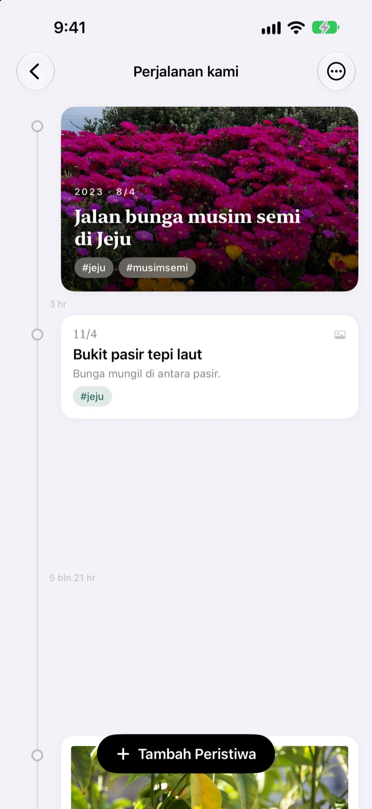
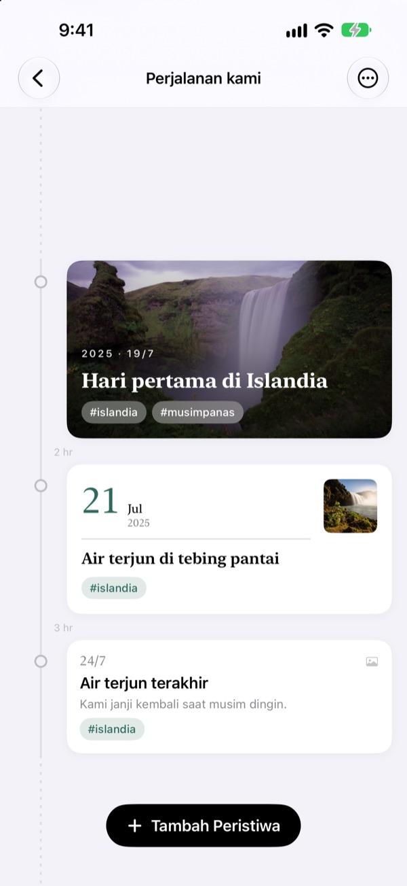
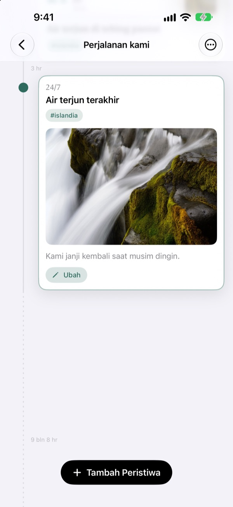
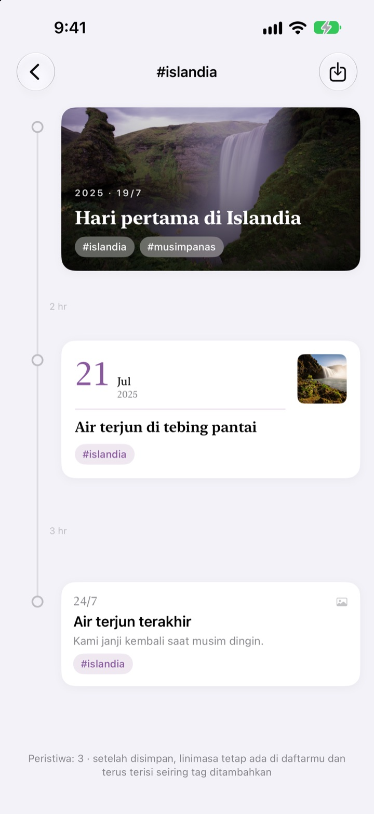
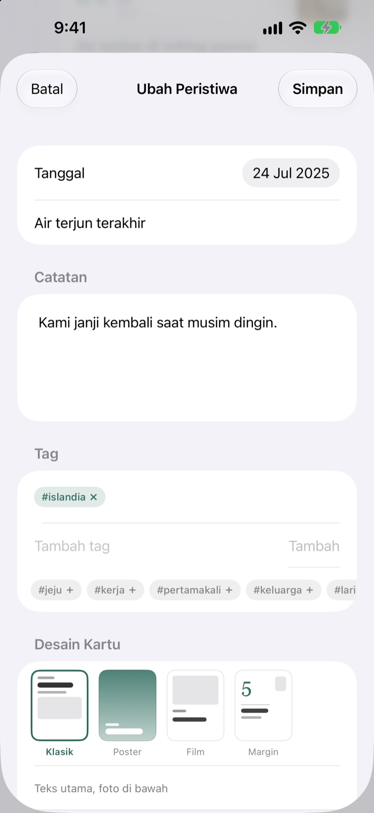

Linimasa yang merenggang
seiring waktu
Tiga hari dan lima hari berjarak 3 banding 5. Jeda panjang seperti 2 tahun 4 bulan terlipat jadi garis putus-putus. Cukup lihat jaraknya, kamu tahu bagaimana waktu berlalu saat itu.
Semua fitur gratis. Untuk iPhone dan iPad.

Coba renggangkan jaraknya sendiri
Setiap tombol menambah peristiwa baru setelah yang terakhir. Jaraknya mengikuti aturan yang sama dengan aplikasi.
Menggulir galeri foto tidak memperlihatkan waktu
Perpustakaan foto hanya mengurutkan semuanya menurut tanggal, padahal selang tiga hari dan dua tahun sama-sama cuma satu langkah. Yeoul memberi jarak antarperistiwa sesuai waktu yang berlalu, jadi langsung terlihat masa mana yang padat dan mana yang lengang.
Jarak adalah waktu
Seluruh linimasa memakai satu skala, jadi rentang waktu yang sama punya panjang yang sama di mana pun di layar. Setiap jarak diberi label durasi sebenarnya, seperti 3 hr atau 5 bln 21 hr.
Peristiwa yang sangat dekat tetap diberi sedikit ruang, dan jeda yang sangat panjang dilipat jadi garis putus-putus.

Menemukan foto dari hari itu
Tentukan tanggal peristiwa lalu ketuk Cari foto terkait untuk melihat foto yang kamu ambil hari itu. Tidak ada yang cocok? Ketuk Cari sendiri dan pilih sendiri.
Ketuk peristiwa di linimasa, foto dan ceritanya terbuka di tempat.

Satu tag mengumpulkan momen yang tercecer
Beri peristiwa tag seperti #Islandia, ketuk tagnya, dan semua peristiwa dengan tag itu dari semua linimasa berkumpul jadi linimasa baru.
Simpan, maka ia tetap ada di daftarmu dan otomatis menampung peristiwa baru bertag sama.

Kartu yang pas untuk tiap momen
Klasik mengutamakan tulisan, Poster memenuhi kartu dengan foto, Film membingkainya seperti foto cetak, dan Margin membiarkan tanggal besar jadi bintangnya. Pratinjau langsung berubah begitu kamu memilih.

Mulai dalam tiga langkah
- 1
Buat linimasa
Tahun pertama si kecil, kisah cinta, perjalanan: masing-masing dengan nama dan warna.
- 2
Tambah peristiwa
Tulis tanggal dan judul, lalu sertakan foto dari hari itu.
- 3
Beri tag
Peristiwa dengan tag yang sama berkumpul, walau beda linimasa.
Empat desain kartu
- Klasik
- Tulisan jadi pusat, foto di bawahnya.
- Poster
- Foto memenuhi kartu dengan judul besar di atasnya. Tanpa foto, kartu diisi warna linimasa.
- Film
- Foto berbingkai seperti cetakan, dengan huruf mesin tik dan cap tanggal.
- Margin
- Angka tanggal besar, foto kecil. Di sini tulisanlah bintangnya.
Peristiwa baru memakai desain yang sama dengan kartu terbaru di linimasa itu.
Semua fitur gratis
Gratis
- Linimasa sebanyak yang kamu mau, dengan nama dan warna
- Foto, cerita, dan tag untuk setiap peristiwa
- Cari foto dari hari peristiwa
- Simpan linimasa tag
- Empat desain kartu
- Sinkron iPhone dan iPad lewat iCloud
- Catat lewat Pintasan dan Siri
Dukung pengembang
- Pilih tip kecil, sedang, atau besar
- Tidak membuka fitur apa pun. Hanya cara untuk berterima kasih
Ada di pengaturan aplikasi, kapan pun kamu mau.
Tanpa iklan, tanpa langganan.
Pertanyaan umum
Kenapa jarak antarperistiwa berbeda-beda?
Yeoul memberi jarak sesuai waktu yang benar-benar berlalu. Semua jarak memakai skala yang sama, jadi tiga hari dan lima hari berjarak 3 banding 5. Peristiwa yang sangat dekat tetap diberi jarak minimum agar tidak bertumpuk, dan jeda yang sangat panjang dilipat jadi garis putus-putus dengan durasi aslinya, seperti 2 th 4 bln.
Foto dari hari itu tidak muncul.
Untuk mencari foto berdasarkan tanggal, aplikasi perlu akses ke foto. Izinkan di Pengaturan > Yeoul > Foto. Yeoul mencari foto yang diambil dari tengah malam ke tengah malam hari itu, sesuai zona waktu perangkat. Kalau tidak ingin memberi akses, ketuk Cari sendiri tepat di bawahnya.
Apa itu linimasa tag?
Ketuk tag pada peristiwa, dan Yeoul mengumpulkan semua peristiwa bertag itu dari semua linimasamu ke dalam satu linimasa. Yang sering kamu lihat bisa disimpan di daftar. Tidak ada yang disalin: ubah peristiwa aslinya maka perubahan ikut tampil di sini, dan menghapus linimasa tag tidak menghapus peristiwanya.
Kenapa tidak bisa menambah peristiwa di linimasa tag?
Linimasa tag adalah tampilan yang dikumpulkan menurut tag, bukan wadah peristiwa, jadi tidak bisa ditentukan linimasa mana yang memiliki peristiwa baru. Tambahkan peristiwa di linimasanya sendiri lalu beri tag, dan ia akan muncul di sini dengan sendirinya.
Bisakah mencatat tanpa membuka aplikasi?
Bisa. Gunakan Catat Peristiwa di app Pintasan atau lewat Siri, cukup pilih linimasa dan judul. Kalau tanggal tidak diisi, waktu saat ini yang dipakai.
Bisakah dilihat di perangkat lain?
Bisa, di iPhone dan iPad mana pun yang masuk ke iCloud dengan Akun Apple yang sama. Periksa di Pengaturan > namamu > iCloud bahwa iCloud aktif. Tergantung koneksi, perubahan bisa butuh sebentar untuk muncul.
Bagaimana menghapus catatan?
Geser linimasa ke kiri di daftar, atau ketuk Edit. Menghapus linimasa ikut menghapus peristiwa di dalamnya. Data yang tersisa di iCloud bisa dihapus lewat pengelolaan penyimpanan di pengaturan iCloud.
Apakah pengembang bisa melihat catatanku?
Tidak. Catatan dan foto hanya tersimpan di perangkatmu dan iCloud milikmu sendiri, pengembang tidak bisa melihatnya. Detailnya ada di kebijakan privasi di bawah.
Bagaimana melaporkan bug atau mengusulkan fitur?
Langsung dari pengaturan di aplikasi, lewat email, atau Instagram @lee25_ios. Sertakan model perangkat, versi iOS, dan apa yang terjadi supaya bisa dibantu lebih cepat.
Ada pertanyaan atau masukan? Kirim ke leeo@kakao.com.